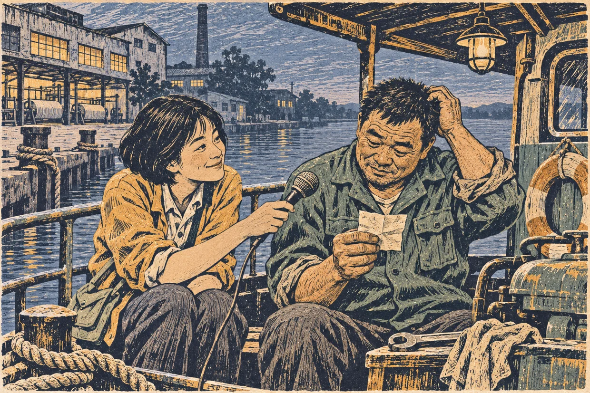

谁来接班
本次换带 · 陈雾六月1日 / 沈一鸣六月13日读沈一鸣的六月13日 ↗我头天值夜，先把椅子调高了两格。我妈说广播员坐多高街上也看不见，我说你少管我。等她走了，我悄悄又放低一格，脚后跟悬着，讲话不好听。
二〇〇三年六月一日，瑞河有线广播站。夜班簿上有“交班人”和“接班人”两栏。我签了一个，剩下那个空着，看了很不得劲。周师傅拿旧钟芯改过一对录音机，船上一台，台里一台，都有寄和取两个键。我把台机上的寄键按下去，学报时员吸足了一口气。
“这里是瑞河有线广播站，等人来接班，听到请报个名字。”
三点三十三分，取键自己下去了。等它弹起来，我放了一遍。一阵像湿袜子拧不干的动静。我弟从前爱拨倒听档，听自己把棉花喊成一声喷嚏。我也拨过去。
“小陈。你不认识我。”
他报了名字，沈一鸣。报的年份我又听了一遍，二〇二六。他说西厂渡棚的铁皮喇叭要掉，那只嘴巴上补过锡的；让我去试第三根线，找旧浴室的后窗。还说明天我开西桥的钟盖，会掉三根雪糕棍进脖领子。这事是我自己告诉他的。
我记到这里，把簿子合上了。这地方愿意耍我的人很多，愿意糟践自己半夜好觉来耍我的，就只剩我弟。长凳上，小棉花嘴巴微张，睡出了一小滩口水。
我重新打开簿子，在接班那一栏写上“待查”。天亮领棉花沿石子路去认喇叭。他踮脚一看，补的那块锡果然有巴掌大。他特别高兴：“姐，这要掉下来，归我吗？”
领口
本次换带 · 陈雾六月2日 / 沈一鸣六月12日读沈一鸣的六月12日 ↗我给姓沈的录了段正经试播，说他交代的事我得白天去看。这么一段普普通通的话，我说了三遍。最满意的那一遍，周德明光着膀子在门外找衣裳，我顺口骂他，带子还转着。留给那个人的我，就这么出了洋相。
这一夜收下的倒音，翻过来没一句讲钟。沈一鸣在说展厅，说一个叫小嘉的人，说到自己的房租，声音低下去，好像我也认识他的房东。我把日期抄在簿子上。他写六月十二。昨天那盘写十三。这个人的日历像食堂窗口摞起来的饭盆，顶上一个拿掉，底下倒是前头来的。
午后西桥的钟果然停了。我踩上木梯，一手扶铁框，一手拧后盖，事先还特意攥住领口。螺丝眼太紧，只好腾出这只手帮一下忙。第三根雪糕棍顺着汗水贴到背上，我在梯子上扭得活像在给全街的人跳舞。
棉花在底下拾了两根：“他少说了一根还是多说了一根？”
我抖了抖衣裳。第三根落在他额头上。他再也不笑了。我忽然觉得，昨晚那个人也许真的缺钱交房租。有人能猜中三根雪糕棍，并不等于别人肯白给他一间屋住。
铅笔头
本次换带 · 陈雾六月3日 / 沈一鸣六月11日读沈一鸣的六月11日 ↗把雪糕棍的事录进去时，我冲话筒质问他怎么知道有三根。那头是六月十一，知道我已经在梯子上出过这回丑吗？取带轮还没走完，棉花就拿指头去按倒听。我拍开他的手。他一急，又学会了我妈那句“东西都是你一个人的”。
这一天沈一鸣托我办的是人的事。他念了句话，先讲开船，再讲等人。我摸出插在领口的铅笔照着听写，中间倒回来三遍。他想听周德明亲口说一遍。原先打算拿去做展，现在想给周家的小嘉听，问问老周肯不肯。
我在纸顶上写“周师傅口述”，看看不对，拿橡皮擦掉。船还没开。这句话眼下只经了两个姓，一个沈，一个陈，哪里就姓周了。
傍晚我去渡口，没找见周师傅，倒先碰见他儿子，小嘉把自行车支在桥头，拎着一只油纸包走了。我喊他忘了车，他回头说车放那儿又不会长腿。我想跟他讲，也有一个地方，你已经是个会惦记父亲声音的中年人了。没开口，油纸底下滴出一滴酱，一条狗替他很仔细地把地舔干净了。
我拿根橡皮筋，把纸条同自己的早班闹钟扎在一处。明天我要赶在周师傅开船以前去。
刮胡镜
本次换带 · 陈雾六月4日 / 沈一鸣六月10日读沈一鸣的六月10日 ↗凌晨两点，周德明在船舱里刮胡子。我扒开帘子，他用镜子望着我：“来得好。左边还留着没有？”我说有。他往右刮了一刀。我忘了镜子里得反过来指。
我把那张纸递过去，连同那边想要这句话干什么、后来又改了主意，一样样讲明白。他倒没怎么琢磨那句话。他问小嘉多大。我说那边总得有四十多了吧。他脸上挂着一半白沫，手在裤袋里下意识掏了一下。“我瞧见他，还想给他三块钱。四十多了也给？”
他关了船上的风扇，把纸贴在镜子上。真正念的时候他在“开船的时候”后头歇了一歇，我手指头没动。“我还在等人。”等谁呢？他望着镜子，好像那个人就站在他身后。

他要我把照纸念这一层也录上。小嘉听可以，往展厅里放，叫人以为是今天这条船，那就冤。回到台里只剩四分钟。我本来很想讲讲他掏裤袋的样子，末了只留了用途和来历。刮胡镜那一场，我自己记得便够了。
三点三十三分以后，我在来带里听见一阵柴油机响。那是沈一鸣曾经垫到老周话底下的船声。他把来处也讲了。我天天在这里听船靠岸，一听就知道这船开得远，录音却把它摆到了人耳朵旁边。
散早班走过邮局，我问了播音员考试报名费。原先这笔钱我打算省给棉花配副眼镜。现在想两件事都办。我跟我妈开口借钱，她只问要多少，我倒把预备好的五句好话省下来了。
搬走的人
本次换带 · 陈雾六月5日 / 沈一鸣六月9日读沈一鸣的六月9日 ↗女工宿舍一楼的搪瓷盆运了三板车，门背后还剩一只塑料凉鞋。我提着楼上楼下去问，六个人都说是我的。我低头看看，自己两只脚上还好好套着鞋呢。
临交带前，我告诉沈一鸣宿舍的人已经搬了，要记清这是我们这里的事。周德明认的是把话给小嘉，一段带子还能给谁听，得由开口的人自己说。我刚替老周录过，最晓得他把纸送还给我以前，看的是谁。
等我把他这一夜的生音拨正，才听清那个展是怎么回事。他年轻时剪过老周的一段话，他欠周家。末了他央我再遇到周师傅，让老人家痛痛快快把咳嗽咳完。我们老周今年还吃得下带脆骨的肉，听见有人在外地这样疼他，大概要怀疑自己明天就要死。
下午老周划船，把人家晒的一排酱鹅蹭掉了。苦主追到我家，非说广播里常常喊周师傅周师傅，找广播站总没错。我妈赏我一只盆，叫我跟人一道去捞。捞回三只，还剩一只，老周去赔了钱。我忽然有点明白为什么得把这些琐事告诉那个人。一个会闯祸、会掏钱的人，让人纪念起来总得费事些。
跑到听见为止
本次换带 · 陈雾六月6日 / 沈一鸣六月8日读沈一鸣的六月8日 ↗棉花去浴室那天，沿路拿我一根红头绳认线。我们从渡棚试到旧锅炉房，喊一二三，喊得卖豆腐的以为我们要掀他炉子。直到棉花跑到浴室后窗，把听到的数写在手心里跑回来，才算找对了第三路。九。汗把那个圈圈洇开了，看着竟像一只带尾巴的小蝌蚪。
天快亮前我告诉沈一鸣线路试通了，也把酱鹅的事讲了。我问他，搭船忘给钱也是欠，你到底欠他什么？昨天那段话我是听懂了，可我想知道，一个会这样听人说话的人，当时下手的时候，心里是怎么过的。
这一夜轮到我听，只听见小姑娘吹单簧管。她猛吸一口气，往高了走，噗地一下，像谁在屁股底下坐坏一个纸袋。棉花笑得把铅笔掉进饭里。我也笑。机器停转他还仰着脸，问我还有呢。我把带子从头放过。
笑到第三遍我才反应过来，今天他在那边是六月八日。等他过到能交代老周那段话的六月九日，我的这声追问早落在他身后的日子里。我把桌上日历撕开两排，让棉花替我把胶水拿来。他说：“你这么贴，过生日怎么算？”我说放心，你一年还是只许吃一回蛋糕。
凉土豆丝
本次换带 · 陈雾六月7日 / 沈一鸣六月7日读沈一鸣的六月7日 ↗我妈来台里，第一件事是把我坐扁了的凉鞋从屁股底下抽出来。第二件事是问我弟吃不吃麻酱。我说他睡着呢。她瞥我一眼：“我又没叫你当场问他。”
两个饭盒占了半张桌子。妈看见日历正中间那个红圈，问是哪个倒霉蛋生日。我说我在算一个朋友还有几天认识我。头一晚他叫小陈，如今快连名带姓地叫了。她把青椒土豆丝一根根往盒盖上摊，好等棉花醒来吃凉的，手上一点没耽误。
我把话筒递给她。我原想当着苏兰姨的面，让她亲口保证水再上来就走。姨待我们好，小时候我在她家嗑瓜子，落地的都是空壳，剥好的瓜子仁全给我塞在腮帮子里。可那边这位姨等了那么些年，就得来替我管我妈吗？我只问她，愿不愿给姨捎句话。
我妈筷子都没放下。她请苏兰保重，又说可以叫我跑腿，我要是替她答应什么，可得回来问她。末了她笑道：“找我不难。照老规矩，床上没你就是有我。”

等她说完，等寄键弹起，等三点三十三分另一格来带也走完，我才把倒听档拨过去。我妈听见窸窣响，以为台机里有耗子。翻正了，是个上了年纪的女人笑她睡觉噘嘴，又嫌姓沈的给她喝的茶水有咸味。还有一只装桃酥的袋子沙沙地响。
我妈把饭盒往旁边推了半尺，像要腾一块地方好让人搁袋子。“她到人家屋里还挑三拣四。”那边自然听不见。我偷吃了一根土豆丝。我妈往我拿筷子的手背上打，轻得像替我拍掉一粒芝麻。
先让自己听
本次换带 · 陈雾六月8日 / 沈一鸣六月6日读沈一鸣的六月6日 ↗白天试播，我对着空渡棚喊“妈”，铁皮喇叭还给我一声凶巴巴的“妈”。修鞋的老方在底下连忙摆手，声明他什么也没做。我换了一副甜嗓子再喊一遍，他说这一回像要找他借钱。
我向来嫌广播里的人说“请注意”像含着一口水。轮到我，好端端一个“妈”字，嘴唇也非得跟我捣乱。我在寄带上问沈一鸣，你怕不怕听见你自己的声音？说我去试喊我妈，听着像骂街。我没往下讲。讲完了他大概又要给我想个办法。今天我只想让一个人晓得这件丢脸的事。
他的倒音里却说起做一段假话有多省事。他早知道。原本在屋里停了一下的两个人，经过他一双手，到了外头竟像没喘过那口气。我用大拇指抵住台机的暂停键，这铜片每天擦得锃亮。连我自己刚才那个“妈”字，也在屋里试了两遍才肯让人听啊。
晚上去渡棚送油，我说把灯挂在栏杆上，人先走，照样有人看得见。我妈解下提环，往我手里一套：“行，你守。”一刻钟里来了两家人。头一家看见灯就要往水里踩，我急得扯住人后领。后一家抱着个睡熟的娃娃，我还得伸手先接娃娃。窗子那头棉花又在叫我。我把灯还给她，第一次觉出手心那半道铁印子的分量。
咳一声
本次换带 · 陈雾六月9日 / 沈一鸣六月5日读沈一鸣的六月5日 ↗过了午夜我去船上找周师傅，请他借我两下铃声。他听我带子在走，把一口咳嗽憋回去，跟着摇了两下铃，答应守最后一班船。我把咳到半路的那一声也留下来。凭沈一鸣的耳朵，准能听出有个人在里头使劲装体面。
来带上他讲自己那座城。他们那边的余巧没能回来。厂里清点的是铺位号，没想到同一张铺上能轮两个女工。叫我认人的脸。我抬眼就看见妈从河沿过，后腰的衣裳吊在裤腰里，一只手腾不出来，正拿下巴指使人给她拽平。我很难把这么一个女人想成“没回来”三个字。机器当然也还给我一阵空白，我就把那阵空白听到了头。
午后水上来。那只补过锡的喇叭晃了一下，先是斜着嘴对住水面，又撑了几息，抱箍一松，带着一大捧水花下去了。我们先前从站里跑出去的那双脚，总算没白跑。

我开了第三路，叫一声老方的名字。不一会儿他儿子跑过来，说爸爸听见了，不欠我钱。后台一个小灯泡还好端端亮着。这样就成，我想，总算有一样东西，两头都还好端端的。
风扇停的一声
本次换带 · 陈雾六月10日 / 沈一鸣六月4日读沈一鸣的六月4日 ↗我在寄带里第一次好好介绍我妈。她叫余巧，灵巧的巧。苏兰是她的对班，赶去东堤帮忙了，电话线断了。我妈要在渡棚等她。她俩年轻时轮倒班，合睡一张床，各人脱的鞋总能把床底下最后一点干地方找着。讲起这些，我不小心碰响了东西，嘴里连西桥那口停了的钟都念叨上了。
沈一鸣这一天给我寄了两小截苏兰姨的声音。姨先在一处叫阿巧，又在另一处说自己在船上。中间隔着不同的话、不同的气口。他还留了风扇关掉的一声嗒，亲口说那句话是他接的。我听了半天，他说“那句”，好像我屋里已经摆着一段天衣无缝的话。其实眼下只有两块散的布头，毛边都在。
我找了个带盒，把这一段另放一处，写“原话”，把盖子扣紧。小时候我妈拿床牌抵着针尾补裤子，正面一条缝藏得挺干净，反过来，全是往回找针脚的乱线。要是衣裳一辈子只准给人看一面，倒可以省下好些手艺。
入夜我去渡棚，从妈手里接过灯，好让她用两只手扎头发。她仰起脸让我看看扎歪没有。水面一晃，灯照得她连眉毛都没了，我还是说：“好看。”这样便宜的好话，谁要去查它的针脚呢。
门帘
本次换带 · 陈雾六月11日 / 沈一鸣六月3日读沈一鸣的六月3日 ↗渡棚里有个捡棉纱的小孩弄脏了裤子。我在门口把帘子把了半天。我妈擦完他屁股，出来说，这水再深一尺，这些男小孩也还得害臊。我把这件事说进今天的寄带里。我们这里每天报水尺、报船次，已经报得太多，起码让那个姓沈的知道水里还有条光屁股要面子的好汉。
三点三十三分，硬邦邦一串倒音落下来。等机器收完、翻过来，苏兰姨在喊：“阿巧，我在船上。”比七号那位姨年轻，比我们两家一起吃饭时坐桌角的那位姨又老一点。阿巧和我在船上之间接得那么稳，光凭我这双耳朵，昨儿要是没听过原话，今天一定会跑到水边去找人。
带尾还有沈一鸣自己的声音。他问，喇叭只往外喊，渡棚里的人听见了，你怎么知道？我拿指节敲了敲玻璃，棚里黄灯纹丝没动。我就算在台里把嗓子喊破，他刚寄走的那一截里也添不上我的回答。得等到明天我这边再开寄键。等我那边的熟人听见，他自己倒还要隔一天才来问。
夜里我先给妈播七号的整段话。灯升了两下。稍后小船给我带回一句：“劝我的我听着了。东堤那一个呢，谁见她上岸了？”我隔着新涨起来的一条河，从亮着的那扇窗走到暗一点的那扇窗，想换个地方看看那盏灯。两头看去，它都停在原处。
还空着几秒
本次换带 · 陈雾六月12日 / 沈一鸣六月2日读沈一鸣的六月2日 ↗我接着昨天他那句问话，录了今天的头一句：“把灯举两下，就是听见了。你放心，我妈胳膊好得很。”讲完我竟笑了出来。那边姓沈的才值第二夜，没准要抬头找自己街口的灯。
我按下暂停。窗玻璃上一层飞蛾，小腿全挂在亮处。东堤的消息还没来。我已经把棉花送上了高处，能跟我争话筒的人只剩下我自己。
抽屉里有一段现成的话，和一句还没说出口的请求。如今我明白了，要有那段话，竟得由我去央那个才认识我的人。我可以请他去实打实地问苏兰姨，看姨肯说什么。七号那回人家肯坐一夜，讲得心都掏出来了。妈听见了。听见了也还是站在那里。
我放开暂停键，报了日期和年份，讲渡棚快泡了，请他找他那边的苏兰，我只要“阿巧，我在船上”那六个字。我说：“算我求你。”
后头还空着几秒。我本可以说，这句我要拿去骗我妈。我放着那几秒白白走完。过去我总觉得，在台里掐掉别人的话是一种顶大的本事。这几秒里我才晓得，把自己的嘴闭上，原也能干出来差不多的事。
换回的带子里，他在笑，讲一只布鞋和一辆尾号七三九的车，说一条鲫鱼蹦进去，还搭进去一锅茶叶蛋。他还说我才三十五，你别一上来就把我叫老了。他是头一次肯对我讲这点没要紧的私事。我却已经听见过男人在他手里变老、孩子在他店门口吹破音了。把这样一位生人叫来替我作假，我再也喊不出一句响亮的谢谢。
我去台阶上刮青苔。一小片碎玻璃，刮出一条一个鞋底宽的路来。我也不晓得谁会在这条路上站稳一脚。
左耳
本次换带 · 陈雾六月13日 / 沈一鸣六月1日读沈一鸣的六月1日 ↗这一夜的第一句话我早早就录好了。“老沈，下午有条鱼要进你的鞋。车牌尾号七三九。记得还给人家。”要他信我的那句话，得先让他信一回他自己的鞋。我听见自己喊他老沈，还是舍不得重录。这是我最后一夜，是他头一回听见我。
三点一刻，老周的绿灯到了西桥外沿。我报了靠船的位置，妈把黄灯举了两下。她听见了。灯又搁回栏杆上。船头的人已经开始收篙。

我按下第三路，把那六个字放了出去。隔着黑水，我比我妈还想信那就是苏兰姨。绿灯没走，黄灯起来了。我赶紧给老沈那盘还没寄的带子补上一句，将来跟谁讲起，要说清楚，那句“我在船上”是我放的。我报了名字，陈雾，起雾的雾。
我妈往下走，灯猛地一沉。我抓起手电咬住那一级台阶。船拐过来挡住光，我换一只手举着。背后机器到点了，咔哒一声取带，过了一会儿又停了。我知道这一次能收到的，按那人的日历该是六月一日。我没有回头。
绿灯又露出来，听见老周在水上咳起来：“小陈！你妈要上你们那大喇叭！”
我到窗边去。妈手上缠着块擦水布，让我先介绍她。我刚说了“这里是瑞河有线广播站”，她就抢过话头：“苏兰！余巧。我们坐船往上街去。灯掉了，再来别摸黑往下走。我跟人借床去。你早班晚班都到这头来找我吧。”
她嫌叫得怪，再来一遍。第二遍让人举个好看见的东西。两只红色热水瓶胆壳从路灯杆后举出来，周师傅腾了两个空位。我把带子往包里一塞，爬下窗台。船小，背后就是妈还滴水的头发。
我问她怎么听出那句话是假的。她说她当时是真信了，一脚出去，底下没有台阶。后来她想，自己就不能坐在船上叫苏兰吗？她摊开手，一个圆滚滚的灯芯旋钮落在我腿上。我把耳机摘了，告诉她，是我让老沈剪的，苏兰姨没这样喊过她。妈挪了挪那只受伤的手：“找点干的东西给我垫着，疼。”
我抽出报名表的塑料套，把干纸搁到她手底下。旋钮放进裤兜，顺着泡开的补丁掉出来，我又接了一把。这地方前年给鹅啄过。不晓得这回谁肯替我补。
六月十四日中午，我在小学操场上看见苏兰姨。她原来这么年轻，眼角只有一条细纹。她一张铺一张铺找，终于挤进我妈睡的那张。妈先给了背后的人一拐子，转过脸，眼睛睁得老大。“你往里点。瞧，这不挤下了么。”我趁着她俩都没看见，偷偷把掉在床沿下的一只鞋踢正了。
下午县广播站的师傅来装临时喇叭，我才借到机器，把昨夜收下的倒音翻正。师傅转过监听音箱。里面咝啦一声，一把刚拿到机器、什么也不晓得的嗓子随口问：“左耳，听得见吗？”
“听得见。”我说。师傅伸手替我拧小了音量。我把凳子往音箱边挪了半格，两只脚都好好落在地上。
（完）